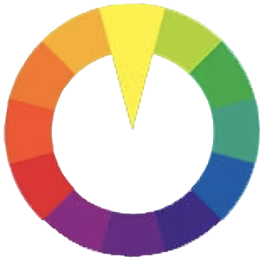
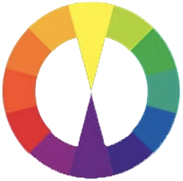
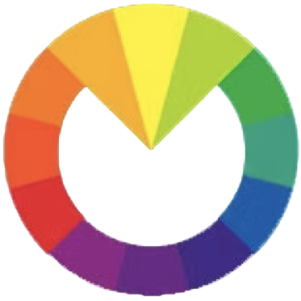
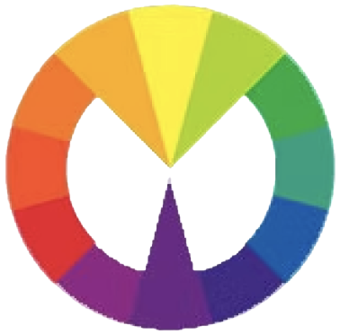
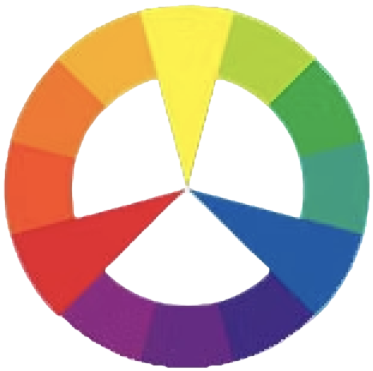
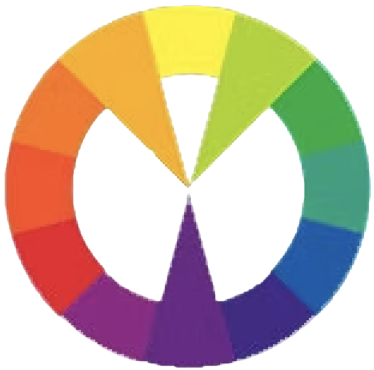
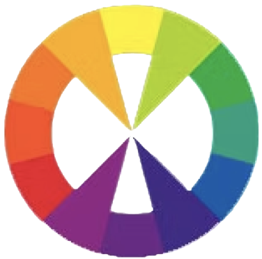
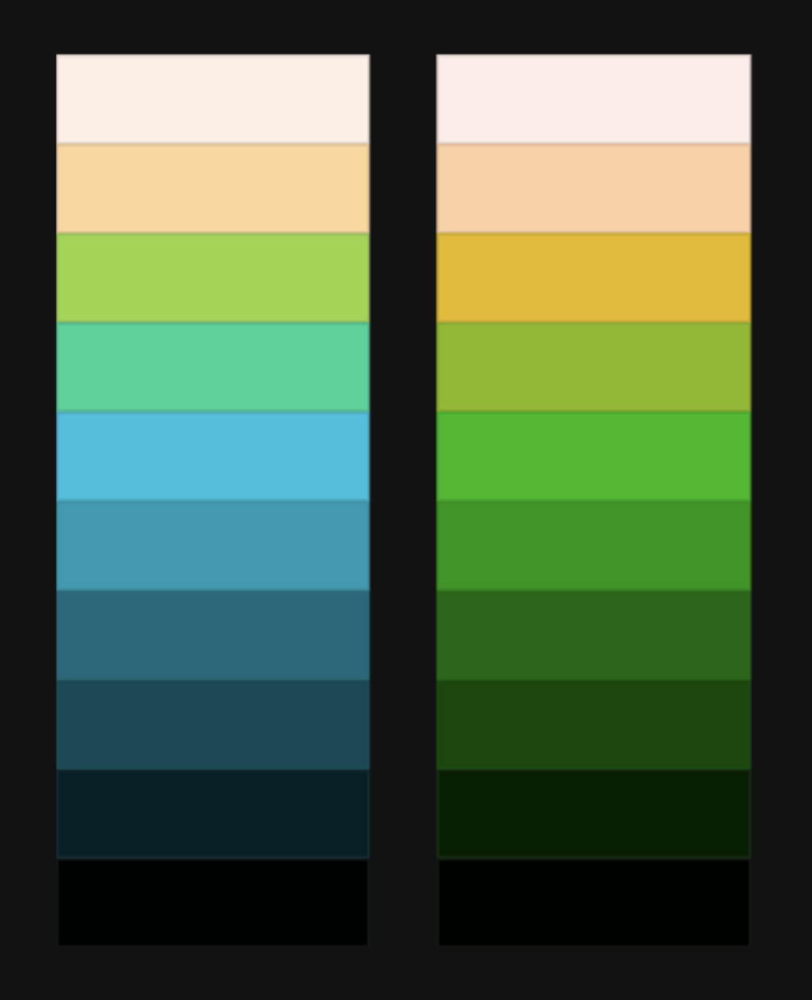
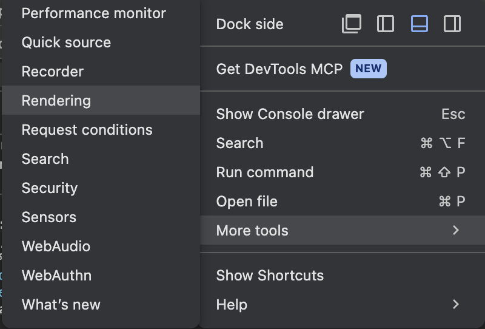
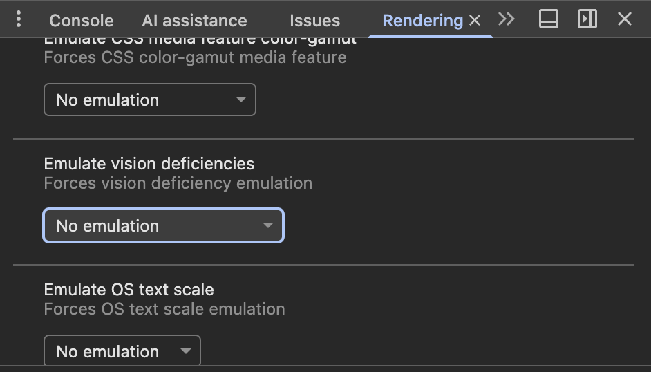

oklch() самые гибкие вычисления с результатом, приближенным к восприятию глазом.
Цвет можно настраивать отдельными токенами --l, --c, --h.
Восприятие можно связать с математикой.
Просите ИИ конвертировать цвета между пространствами по матрицам конверсии W3C CSS Color Module Level Х — так, как это делает Chrome DevTools.
03
Зависимые цвета и гармонии
Включаем гармонию
Все классно, но...
У вас уже цвета не в oklch()
Старая ДС
Внешняя ДС, к изменению которой нет доступа
from = новые возможности
--base: #004B95; oklch(from var(--base) l c h) oklch(from var(--base) calc(l + 0.2) c h) oklch(from var(--base) l 0.3 h) oklch(from var(--base) l c calc(h - 200)) oklch(from var(--base) l c h / 0.5)
Demo
base
oklch
oklch + l
oklch + c
oklch + h
oklch + a
Цветовые гармонии







Комплиментарная
--base: oklch(0.65 0.25 350);
oklch(from var(--base) l c calc(h + 180));
Demo
h + 180
Аналоговая
--base-left: oklch(from var(--base) l c calc(h - 45)); --base: oklch(0.65 0.25 305); --base-right:oklch(from var(--base) l c calc(h + 45));
Тема через @media (prefers-color-scheme: dark/light)
Подстраивается под системные настройки
@media(prefers-color-scheme:dark) { // набор токенов темной темы }
Темы · Задачи
Гибкая базовая тема.
Вычисляемые светлая/темная.
Брендовая тема с настраиваемым акцентом и поддержкой светлого/темного режимов.
Цветной раздел на странице внутри основной темы.
Темы · Шпаргалка
Вычисляться:
из параметров цвета
from
color-mix()
...
Переключаться:
атрибут
:has()
light-dark()
@media (prefers-color-scheme: light/dark)
...
06
Магия
Теория цвета
и практики гибкого кода
Один токен меняет всё: градиент, булеты, подсветки, кнопку и аватар.
Цвет — это три числа: l, c, h
Гармония — это правила сдвига по оттенку
Тема — это один токен и его производные
ВЫ
Имя ФамилияДолжность
08
Заключение
Шпаргалка «безграничных возможностей»
Основные инструменты:
--css-tokens
oklch()
calc()
from
color-mix()
clamp()
С чем смешать:
другой цвет
количество элементов
анимации @keyframes
скролл
темами
ваша фантазия
Цветовые пространства = математика цвета в коде.
Новые возможности CSS помогают
проще этой математикой пользоваться.
Теорию цвета можно применять не только в CSS,
но и в любых других вычислениях.
Используя эти возможности, вы можете создавать
гибкие решения.
На математику можно переложить гармонию,
но стиля вам раздаст дизайнер
@it_wildlife
0Х
Функции
calc(expression)
Даёт возможность рассчитать значения свойств CSS
во время их определения
calc(var(--opacity) + 0.5)
from
Создает новый цвета из заданного
через сохранение или коррекцию каналов оригинального цвета
oklch(from var(--base-color) l c 300 / 0.5)
color-mix()
Смешивает два цвета в заданном пространстве
и указанных пропорциях
color-mix(in oklab, white 25%, blue 75%)
color-mix(in oklch, ...) старая проблема
Раньше смешивание зеленых и синих оттенков в oklch выдавало желтизну. Поэтому использовали color-mix(in oklab, ...).

Сейчас в последних версиях браузеров работает корректно. Фиксы на уровне движков, поэтому для старых стоит использовать как раньше color-mix(in oklab, ...).
практика проектирования интерфейсов так, чтобы информация и элементы управления были различимы и понятны всем людям, независимо от особенностей их цветового восприятия.
Информация передается не только цветом
Контраст
More tools → Rendering → Emulate vision deficiencies


0Х
Demo, которые не влезли
Код хочу оформлять вот так
theme.ts
1// Токены — единый источник правды2export consttheme={3accent:'#F637C6',4surface:'#0E1016',5radius:14,6};7
иконка и текст должны иметь одинаковый контраст к фону
Disabled ≠ невидимый
disabled ослабляем, но не делаем нечитаемым
AA vs AAA
AA крупный
AAA крупный
AA мелкий
AAA мелкий
AA: 4.5:1 мелкий, 3:1 крупный · AAA: 7:1 / 4.5:1
Cкрипт для каждой секции работает с атрибутами СЕКЦИИ, а не документа.
01 CSS-переменные
Обычные переменные
Тема переключается атрибутом data-theme у секции.
script не нужен
Чтобы постоянно не менять настройки браузера при тестировании кода, вы можете временно подменить тему прямо в инструментах разработчика:
1. Откройте инspector кода (нажмите F12 или Ctrl + Shift + I / Cmd + Option + I).
2. Нажмите Ctrl + Shift + P (в Windows) или Cmd + Shift + P (в Mac), чтобы открыть панель команд.
3. Введите слово Emulate (или Имитировать).
4. Выберите из списка:
• Emulate CSS prefers-color-scheme: light
• Emulate CSS prefers-color-scheme: dark
02 light-dark()
Автоматически по ОС
Значения выбираются функцией light-dark().
Смените тему ОС — эта секция переключится
03 color-scheme
Системные цвета
Используются Canvas и CanvasText.
04 data-theme + акценты
Разные акценты
Атрибуты data-theme и data-accent меняют палитру.
script не нужен
05 prefers-color-scheme
Следует за ОС
Тема определяется медиазапросом без JS.
Смените тему ОС
08 три темы
Light / Dark / Sepia
Три палитры и разные радиусы скругления.
09 localStorage
Запоминаем выбор
Тема хранится между визитами. У всех секций — свой ключ.
script не нужен
10 :has() без JS
Только CSS
Тема и акцент — через :has() и радиокнопки.
Ось 1 · Светлота
Светлее, темнее, воздушнее
Светлота отвечает за «вес» цвета. Она же — главный параметр,
от которого зависит читаемость текста на фоне.
светлее→l ↑
темнее→l ↓
воздушнее→l ↑ + c ↓
тяжелее→l ↓ + c ↑
прозрачнее→l ↑ + alpha ↓
глубже→l ↓ + c ↑
Ось 2 · Насыщенность
Ярче, бледнее, спокойнее
Насыщенность — это «громкость» цвета. Один и тот же оттенок
при разной c звучит как крик или как шёпот.
ярче→c ↑
бледнее→c ↓
сочнее→c ↑ + l ~ 55–65%
спокойнее→c ↓
пыльнее→c ↓ + l ↑ + h в тёплую
кислотнее→c ↑↑ + l ~ 60–70%
благороднее→c ↓ + l ↓
дешевле→c ↑↑ + l ~ 50%
Ось 3 · Оттенок
Теплее, холоднее, золотистее
Оттенок — это «характер» цвета. Он двигает цвет по кругу:
от красного через жёлтый, зелёный, синий и обратно.
теплее→h к 30–60°
холоднее→h к 200–260°
розовее→h ~ 340°
зеленее→h ~ 140°
золотистее→h ~ 70–85° + l ↑
морской→h ~ 200° + c ~ 0.10
землистее→h ~ 70° + c ↓ + l ↓
ядовитее→h ~ 100–130° + c ↑↑
Ось 4 · Контраст и отношения
Мягче, строже, дороже
Эти слова описывают не отдельный цвет, а отношения между цветами
в интерфейсе — разницу светлот, радиусы, тени.
контрастнее→ разница l между элементами ↑
мягче→ разница l ↓ + c ↓
строже→c ↓ + h монохром + радиус ↓
игривее→h сдвиг + c ↑ + радиус ↑
дороже→c ↓ + тень в тон + радиус ↑
дешевле→c ↑ + тень серая + радиус ↓
агрессивнее→c ↑↑ + контраст ↑ + h красный
дружелюбнее→c ↓ + l ↑ + h тёплый
Ось 5 · Характер и стиль
Минималистичнее, винтажнее, футуристичнее
Эти слова — про целое настроение интерфейса. Они складываются
из нескольких параметров сразу, а не из одного.
минималистичнее→c ↓ + контраст ↓ + узкая палитра
винтажнее→c ↓ + l ↑ + h в тёплый
современнее→c ~ 0.15 + h монохром + тень в тон
ретро→h ~ 40–60° + c ↓ + l ~ 70%
футуристичнее→h ~ 200–280° + c ↑ + контраст ↑
натуральнее→h ~ 60–120° + c ↓
техно→h ~ 200° + c ↑ + монохром
Ось 6 · Метафоры
Как закат, как море, как золото
Самый человеческий уровень. Здесь эмоция — это образ,
а образ — это конкретная точка в цветовом пространстве.
как закат→h ~ 20–40° + l ~ 65% + c ~ 0.15
как море→h ~ 200° + c ~ 0.12 + l ~ 60%
как мох→h ~ 100° + c ~ 0.06 + l ~ 45%
как вино→h ~ 350° + c ~ 0.15 + l ~ 30%
как кровь→h ~ 25° + c ~ 0.25 + l ~ 40%
как небо→h ~ 220° + c ~ 0.08 + l ~ 80%
как золото→h ~ 70° + c ~ 0.15 + l ~ 70%
Связка · Светлота
светлее
Поднимаем светлоту, оставляя оттенок и насыщенность на месте.
l ↑
былоl 45%
сталоl 75%
/* было */
background: oklch(45% 0.2 35);
/* стало */
background: oklch(75% 0.2 35);
Связка · Светлота
темнее
Опускаем светлоту. Оттенок и насыщенность те же.
l ↓
былоl 65%
сталоl 35%
/* было */
background: oklch(65% 0.2 35);
/* стало */
background: oklch(35% 0.2 35);
Связка · Светлота + насыщенность
воздушнее
Светлее и одновременно менее насыщенный — цвет как бы растворяется в белом.
l ↑c ↓
былоl 65% c 0.20
сталоl 80% c 0.08
/* было */
background: oklch(65% 0.20 35);
/* стало */
background: oklch(80% 0.08 35);
Связка · Светлота + насыщенность
тяжелее
Темнее и насыщеннее — цвет становится «плотным».
l ↓c ↑
былоl 65% c 0.20
сталоl 40% c 0.25
/* было */
background: oklch(65% 0.20 35);
/* стало */
background: oklch(40% 0.25 35);
Связка · Насыщенность
ярче
Поднимаем насыщенность. Оттенок и светлота те же.
c ↑
былоc 0.08
сталоc 0.25
/* было */
background: oklch(65% 0.08 35);
/* стало */
background: oklch(65% 0.25 35);
Связка · Насыщенность
спокойнее
Снижаем насыщенность — цвет становится тише, но не темнее.
c ↓
былоc 0.25
сталоc 0.06
/* было */
background: oklch(65% 0.25 35);
/* стало */
background: oklch(65% 0.06 35);
Связка · Насыщенность + светлота
сочнее
Повышаем насыщенность и чуть поднимаем светлоту до «вкусной» середины.
c ↑l ~ 60%
былоl 50% c 0.15
сталоl 60% c 0.28
/* было */
background: oklch(50% 0.15 35);
/* стало */
background: oklch(60% 0.28 35);
Связка · Насыщенность + тень
дороже
Снижаем насыщенность, добавляем тень в тон и увеличиваем радиус.
c ↓тень в тонradius ↑
былоc 0.28
сталоc 0.10 + тень
/* было */
background: oklch(65% 0.28 35);
/* стало */
background: oklch(55% 0.10 35);
box-shadow: 0 20px 40px -12px
oklch(55% 0.10 35 / 0.5);
Связка · Оттенок
теплее
Двигаем оттенок по кругу в сторону красного и оранжевого.
h к 30–60°
былоh 250°
сталоh 35°
/* было */
background: oklch(65% 0.2 250);
/* стало */
background: oklch(65% 0.2 35);
Связка · Оттенок
холоднее
Двигаем оттенок в сторону синего и голубого.
h к 200–260°
былоh 35°
сталоh 240°
/* было */
background: oklch(65% 0.2 35);
/* стало */
background: oklch(65% 0.2 240);
Связка · Оттенок + светлота
золотистее
Двигаем оттенок к жёлтому, поднимаем светлоту.
h ~ 80°l ↑
былоh 35°
сталоh 80° l 75%
/* было */
background: oklch(65% 0.2 35);
/* стало */
background: oklch(75% 0.15 80);
Связка · Оттенок + насыщенность
морской
Оттенок в голубую зону, насыщенность умеренная, светлота средняя.
h ~ 200°c ~ 0.10
былоh 35°
сталоh 200° c 0.10
/* было */
background: oklch(65% 0.2 35);
/* стало */
background: oklch(65% 0.10200);
Связка · Настроение
грустнее
Уходим в синий, снижаем насыщенность и светлоту — цвет «гаснет».
c ↓l ↓h к синему
былорадость
сталогрусть
/* было */
background: oklch(70% 0.2 30);
/* стало */
background: oklch(45% 0.06240);
Связка · Настроение
радостнее
Уходим в тёплый жёлтый, поднимаем насыщенность и светлоту.
c ↑l ↑h к жёлтому
былонейтрально
сталорадость
/* было */
background: oklch(50% 0.1 240);
/* стало */
background: oklch(75% 0.25 85);
Связка · Характер
строже
Снижаем насыщенность, уходим в монохром, уменьшаем радиусы.
c ↓h монохромradius ↓
былоигриво
сталострого
/* было */
background: oklch(65% 0.25 340);
border-radius: 14px;
/* стало */
background: oklch(55% 0.05250);
border-radius: 4px;
/* было */
background: oklch(55% 0.05 250);
border-radius: 4px;
/* стало */
background: oklch(70% 0.25 320);
border-radius: 24px;
Эмоция — это функция над цветом
Выберите эмоцию слева. Она превратит «было» в «стало» по своему правилу.
Ползунки тут же применяют правило к новому цвету.
«Стало» скрывается только при смене эмоции.